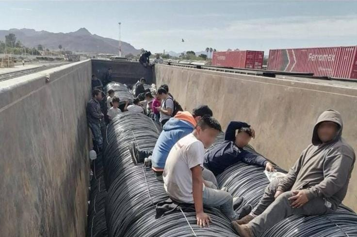

1. Rescate de 27 migrantes en operativo humanitario
El 15 de enero de 2025, un operativo conjunto entre la Secretaría de Marina, Guardia Nacional, Instituto Nacional de Migración (INM), SEDENA y la Policía Municipal de Empalme rescató a 27 migrantes en los patios del ferrocarril de Ferromex. Entre ellos se encontraban 10 venezolanos, 12 guatemaltecos, 3 nepalíes y 2 menores de edad. Los adultos fueron trasladados a la estación migratoria de Hermosillo, mientras que los menores quedaron bajo resguardo del DIF Sonora.
2. Migrantes mexicanos optan por trabajar en campos agrícolas de Empalme
Ante la difícil situación económica en el sur de México, un número creciente de trabajadores originarios de Chiapas ha migrado a los campos agrícolas del Valle de Empalme en busca de empleo. Los jornaleros han señalado que, en comparación con años anteriores, los sueldos actuales en la región son más altos, lo que ha motivado su decisión de migrar hacia esta área en busca de mejores oportunidades laborales. Una tendencia destacada entre los migrantes es el desinterés por el llamado “sueño americano”, ya que varios de los trabajadores indicaron que ya no consideran emigrar a Estados Unidos en busca de mejores oportunidades.
3. Se espera llegada de caravana de 2,000 migrantes a Empalme
En febrero de 2025, la red Franciscana monitoreó el arribo de alrededor de 2,000 migrantes por la región de Guaymas y Empalme, quienes se dirigían hacia la frontera con Estados Unidos. La mayoría viajaba a bordo del ferrocarril, mientras que otros lo hacían caminando sobre la carretera Internacional. Casa Franciscana y autoridades locales se prepararon para brindar asistencia humanitaria, habilitando albergues y ofreciendo atención médica y alimentación.
